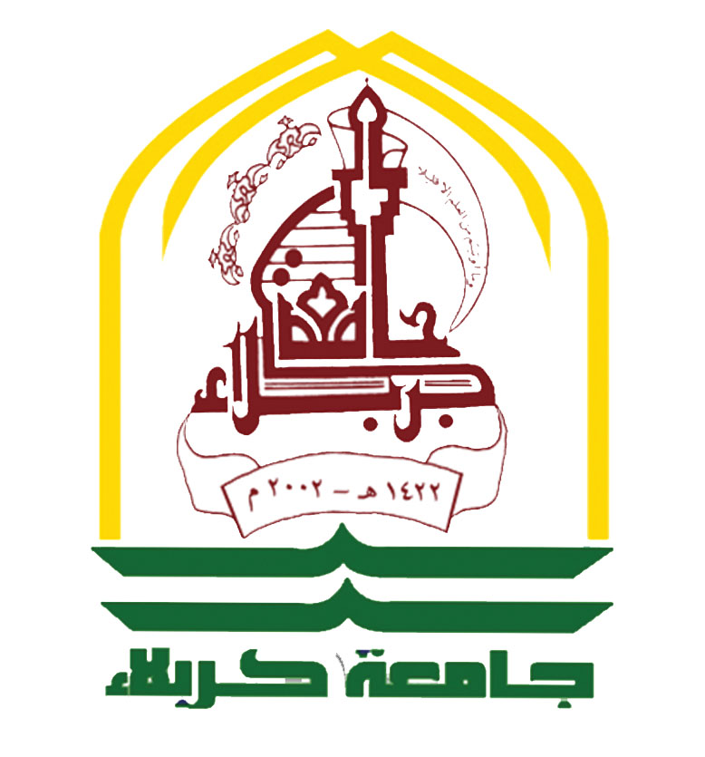

جمهورية العراقوزارة التعليم العالي والبحث العلميجامعة كربلاءكلية العلوم الإسلامية

ورقة أسئلة امتحانية
الدرجة الكلية 100السنة الجامعية 2026 / 2027
صفحة
كلية العلوم الإسلامية • جامعة كربلاء
﴿ وَقُلْ رَبِّ زِدْنِي عِلْمًا ﴾
مع تمنياتنا لطلبتنا الأعزاء بالموفقية والنجاح
مدرس المادة—